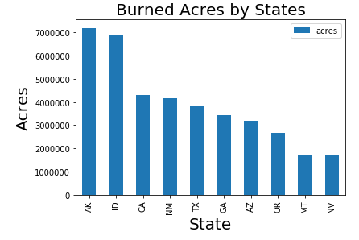
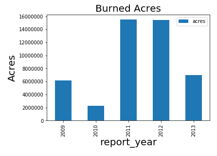
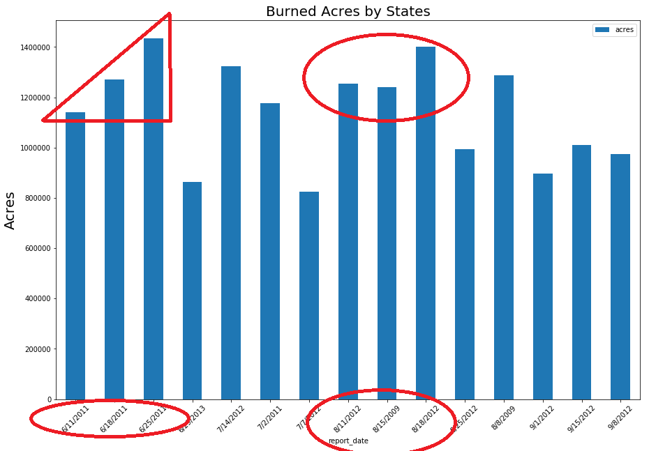

Data Visualization Project
"As many as 90 percent of wildland fires in the United States are caused by people, according to the U.S. Department of Interior. Some human-caused fires result from campfires left unattended, the burning of debris, downed power lines, negligently discarded cigarettes and intentional acts of arson. The remaining 10 percent are started by lightning or lava."
2013: From January 1 to June 2, 2013 there were 19,762 wildfires compared with 14,968 wildfires in the same period in 2012, according to the National Interagency Fire Center. About 439,422 acres were burned in the 2013 period, compared with 277,745 million acres in 2012.
2012: In 2012 there were 50,477 wildfires compared with 58,083 wildfires in 2011, according to the National Interagency Fire Center (NIFC). About 4.7 million acres were burned in 2012 while there were 8.8 million acres burned in 2011. The Kincade Fire in Sonoma County ignited on October 23, and burned about 78,000 acres—an area more than twice the size of the city of San Francisco. According to CalFire, 374 buildings have been destroyed, and 60 more were damaged. The Getty fire in Los Angeles broke out on October 28, fueled by strong Santa Ana winds, with wind gusts up to 80 miles an hour and burned 745 acres. In Ventura County, the Maria fire began on October 1 and burned 10,000 acres and destroyed four structures. The Ranch fire, ignited November 3, burned 2,500 acres.
2011: In 2011 there were 58,083 wildfires, compared with 71,499 wildfires in 2010, according to the NIFC. About 8.8 million acres were burned in 2012, compared with 10 million in 2011. The Mendocino Complex Fire broke out on July 27 in Northern California and grew to be the largest fire in state history, with 410,203 acres burned. The Carr Fire, which broke out on July 23 in Northern California, is the eighth most destructive fire in the state’s history. Eight fatalities are attributed to the fire, and 1,614 structures were destroyed. Loss estimates are not yet available from the Property Claims Services (PCS) unit of ISO. The Insurance Information Institute (I.I.I.) estimates that insured losses from the Carr Fire totaled between $1 billion and $1.5 billion in dollars when it occurred. The Camp Fire broke out in Butte County, Northern California on November 8 and became the deadliest and most destructive fire on record in the state. According to Cal Fire statistics 85 people perished. About 153,000 acres were burned and 18,800 structures were destroyed. Loss estimates are not yet available from the Property Claims Services (PCS) unit of ISO. The I.I.I. estimates that insured losses from the Camp Fire totaled between $8.5 billion and $10.5 billion in dollars when it occurred. The Hill and Woolsey Fires started on November 8. The Woolsey Fire burned about 97,000 acres, according to Cal Fire. It destroyed about 1,600 structures and killed three people. Loss estimates are not yet available from the Property Claims Services (PCS) unit of ISO. The I.I.I. estimates that insured losses from the Woolsey Fire totaled between $3 billion and $5 billion in dollars when it occurred. The Hill Fire burned about 4,500 acres and destroyed four structures.
2010: In 2010 there were 71,499 wildfires, compared to 65,575 wildfires in 2009, according to the NIFC. About 10 million acres were burned in 2010, compared with 5.4 million in 2009. The number of acres burned in 2010 was higher than the 10-year average. From October 6 to October 25, eight counties in Northern California were hit by a devastating wildfire outbreak that caused at least 23 fatalities, burned 245,000 acres and destroyed more than 8,700 structures. The Tubbs Fire began on October 8 and destroyed almost 37,000 acres and 5,600 structures and claimed 22 victims. The I.I.I. estimates that insured losses from the Tubbs Fire totaled between $7.5 billion and $9.7 billion in dollars when it occurred. The Atlas Fire also began on October 8 and consumed 52,000 acres and destroyed 120 structures. Six people perished in the Atlas Fire. According to the I.I.I. the Atlas Fire caused insured losses of between $2.5 billion and $4.5 billion when it occurred. The Thomas Fire was ignited on December 4. It burned 282,000 acres and destroyed 1,063 structures. According to Cal Fire, the Thomas Fire was the second largest in California history. Loss estimates are not yet available from the Property Claims Services (PCS) unit of ISO. The I.I.I. estimates that insured losses from the Thomas Fire totaled between $1.5 billion and $3.5 billion when it occurred."
Select a Map Topic to View
These visualizations are from other sites. Links to the sites are provided in the conclusions.



"Alaska is the Top state with the largest number of acres burnt". The fires are part of a summer of extremes in Alaska – record heat, lightning strikes in unlikely places, extraordinary meltdown of glaciers and widespread die-offs of animals, including whales, seals, birds and masses of pre-spawned salmon killed in waters with temperatures measured as high as 80 degrees F (26.7 C).
"Arizona witnessed the largest number of acres burnt in June 2011".June is frequently a dry month statewide, and this year was no exception. Significant precipitation has not fallen in Arizona since mid-May. This dryness has worsened the drought impacts of the dry winter and spring. Wells are drying up across the northern counties. Strong winds and high temperatures have dried out the soil and vegetation. Over the past month, the percentage of the state in each drought category has increased, and only a narrow area along the lower Colorado River is currently without drought.
"The weeks in June are the deadliest in total number of acres burnt" These weeks mark the end of summer but due to global warming, there is an increasing trend of warm climate and extended heat spells, resulting in a trend of deadly wildfires